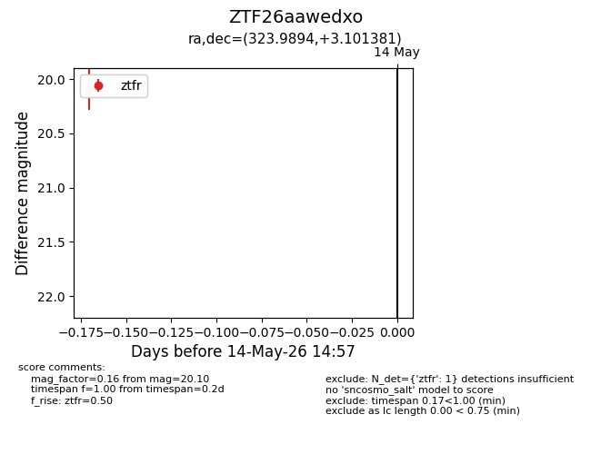
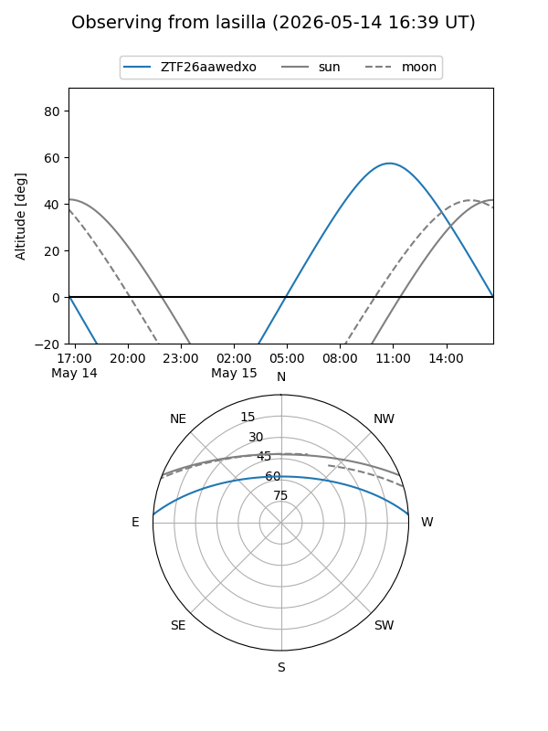
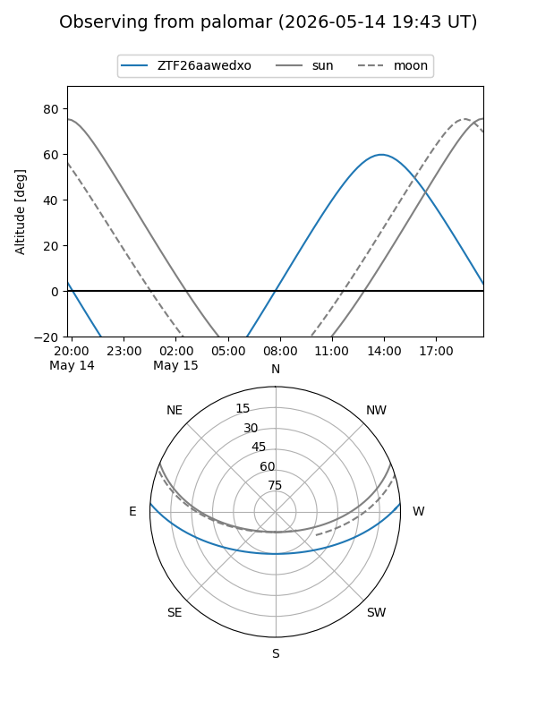
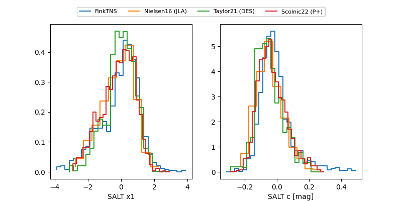

ZTF26aawedxo
Target ZTF26aawedxo at 2026-05-14 14:58
Aliases and brokers:
FINK: link
Lasair: link
ALeRCE: link
alt names
ZTF26aawedxo (ztf,fink_ztf)
Coordinates:
equatorial (ra, dec) = 323.9894,+3.10138
equatorial (HMS+DMS) = 21:35:57.46,+03:06:04.97
galactic (l, b) = (57.7393,-34.04743)
Flags:
Photometry:
last ztfr=20.10
1 ztfr detections
Lightcurve

Visibility


Additional plots
